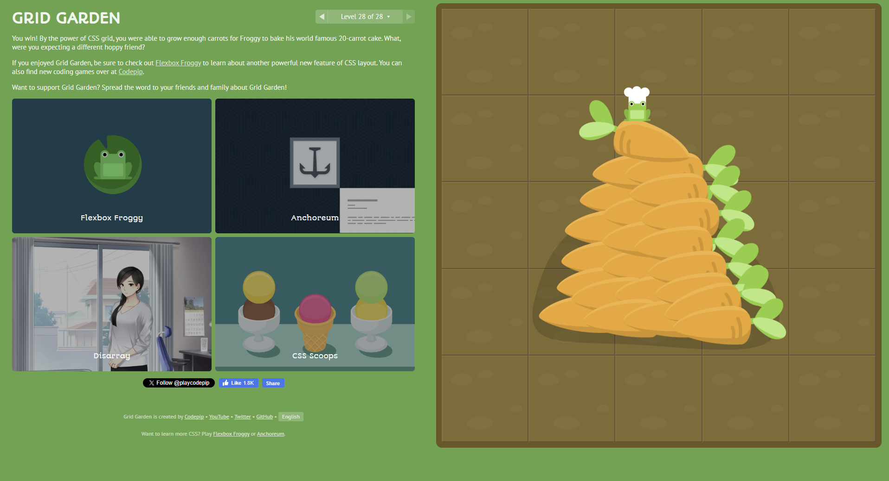

A sauce for every craving
Stuck on which made-from-scratch sauce to
try next? We can help.
Feeling cheesy?
Craving something creamy?
Have something hearty in mind?
Is everything better with bacon?
The five cheese marinara's for you
Must be the meat sauce
Make it
marinara
marinara
Carbonara and
call it a day
call it a day
It was always
alfredo
alfredo
Created by Brent Gilfillan
